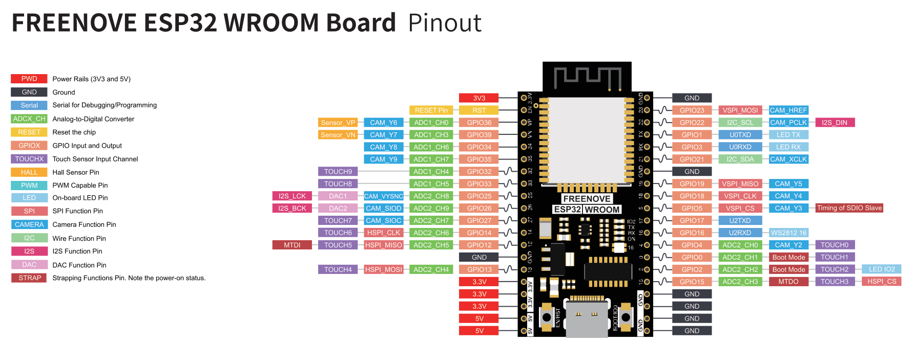

I want to build something real with microcontrollers to understand the fundamentals of communications protocols, and gain experience with reading reading datasheets before I commit to building a custom PCB. The goal for this project is simple: read temperature, humidity, , and barometric pressure from a sensor over I2C. Of course, there are many places in which I can go above and beyond what is required like storing the data locally, on a cloud server, using batteries instead of USB, etc. but for now, we'll try to get the bare minimum working.
The longer-term goal is to take everything I learn here, and design a proper PCB that does the same job without the breadboard mess. Once the PCB design is finished, I plan on designing a container for it in solidworks and have it run as device I use on the day to day in my room.
Before even using the board, I first had to install some libraries in the Arduino IDE. After doing so, I set the board to "ESP32 dev module" and tried to set the port but noticed that the Port menu was greyed out.
Apparently, such a thing happens when the PC can't detect the microcontrollers. After connecting and disconnecting the ESP32, I noticed that my laptop detects the connection, but can't identify what the ESP32 is. After checking the device manager and again connecting and disconnecting multiple times I became sure that my device is not being picked up which would mean it's a driver issue.
Device is being detect after the drivers were installed. The port menu in the arduino IDE is no longer greyed out and now shows "COM10" as the available port. To test if it's working fine, I went to Tools > Examples > 01. Basics > Blink which is a simple blink program already written in the IDE and uploaded the program to the MC. The LEDs started blinking which means the device was connected successfully and is reading the code without any problems.
// the setup function runs once when you press reset or power the board
void setup() {
// initialize digital pin LED_BUILTIN as an output.
pinMode(LED_BUILTIN, OUTPUT);
}
// the loop function runs over and over again forever
void loop() {
digitalWrite(LED_BUILTIN, HIGH); // change state of the LED by setting the pin to the HIGH voltage level
delay(1000); // wait for a second
digitalWrite(LED_BUILTIN, LOW); // change state of the LED by setting the pin to the LOW voltage level
delay(1000); // wait for a second
}
Note that the
LED_BUILTIN
refers to the pin to which the builtin LED is assigned. A quick look at the documentation file tells us that LED IO2 is at pin 2.

The display setup was pretty straight forward. There are four pins on the display each corresponding to "GND", "VCC", "SCL", and "SDA", respectively. A quick look at the SSD1306 Datasheet tells us that for IC logic, a voltage of 1.65 to 3.3 Volts is required, which means that "VCC" must be connected to the 3.3 V pin on the ESP32. The clock and data pins of the display correspond to the I2C_SCL and I2C_SDA pins on the ESP32 (pins 22 and 21). Similarly, GND was connected to the ground pin of the ESP32.
Spent longer than I'd like to admit trying to figure out why my SDA/SCL pull-up resistors weren't needed — turns out the Arduino Uno's Wire library enables the internal pull-ups automatically. I had 4.7kΩ resistors wired in and everything still worked, but now I understand why the datasheet specifies external ones for longer cable runs or higher bus speeds.